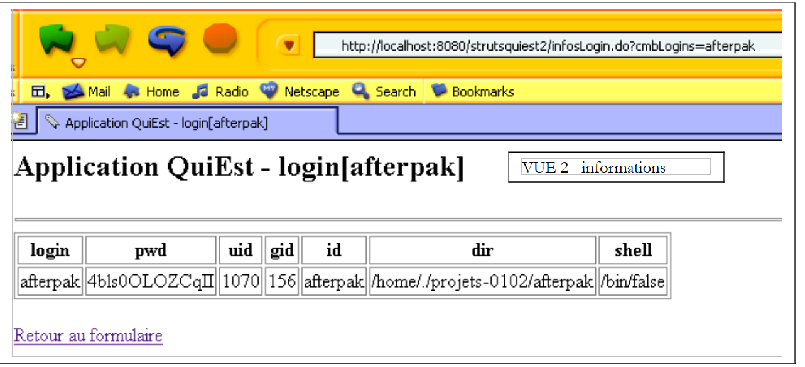
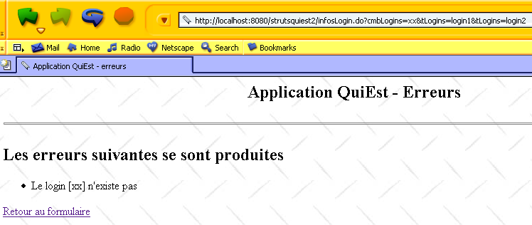

7. تطبيق QuiEst
نصف هنا تطبيق Struts أكثر تعقيدًا قليلاً من التطبيقات السابقة، التي تم إبقاؤها بسيطة لأغراض تعليمية.
7.1. فئة المستخدمين
لدينا فئة Java تخزن معلومات عن مستخدمي جهاز Unix. يتم تخزين هذه المعلومات في ثلاثة ملفات محددة:
- /etc/passwd: قائمة المستخدمين
- /etc/group: قائمة المجموعات
- /etc/aliases: قائمة الأسماء المستعارة للبريد الإلكتروني
محتويات هذه الملفات الثلاثة هي كما يلي:
- /etc/passwd
تتخذ الأسطر في هذا الملف الشكل التالي:
login:pwd:uid:gid:id:dir:shell
حيث
تسجيل دخول المستخدم | |
كلمة المرور المشفرة الخاصة بهم | |
معرف المستخدم | |
معرف مجموعته | |
هويته | |
دليل تسجيل الدخول الخاص به | |
قشرته |
وبالتالي، قد يبدو سطر المستخدم كما يلي:
المستخدم السابق له الرقم التعريفي 110 وينتمي إلى المجموعة 57. يمكن العثور على تعريف المجموعة 57 في ملف /etc/group.
- /etc/group
تتخذ الأسطر في هذا الملف الشكل التالي:
nomGroupe:pwd:gid:membre1,membre2,....
مع
اسم المجموعة | |
كلمة المرور المشفرة - عادة ما يكون هذا الحقل فارغًا | |
معرف المجموعة | |
تسجيلات دخول المستخدمين - قد يكون هذا الحقل فارغًا |
وبالتالي، يمكن أن يكون السطر الخاص بالمجموعة 57 أعلاه كما يلي:
مما يشير إلى أن المجموعة 57 تسمى iup2-auto.
- /etc/aliases
تتخذ الأسطر في هذا الملف الشكل التالي:
مع
الاسم المستعار | |
علامة تبويب واحدة أو أكثر | |
تسجيل دخول المستخدم الذي ينتمي إليه الاسم المستعار |
وبالتالي، فإن السطر
guillaume.dupond: dupond
يعني أن الاسم المستعار guillaume.dupond ينتمي إلى المستخدم الذي يحمل اسم تسجيل الدخول dupond. تذكر أن الأسماء المستعارة تُستخدم في عناوين البريد الإلكتروني. لذا، إذا كان اسم جهاز Unix في المثال السابق هو shiva.istia.univ-angers.fr، فسيتم تسليم رسالة البريد الإلكتروني الموجهة إلى guillaume.dupond@shiva.istia.univ-angers.fr إلى صندوق البريد الخاص بالمستخدم الذي يحمل اسم تسجيل الدخول dupond على ذلك الجهاز.
لن نتناول هنا واجهة فئة users بالكامل، بل سنكتفي بمُنشئها وبعض الطرق:
import java.io.*;
import java.util.*;
public class users{
// attributes
private Hashtable usersByLogin=new Hashtable(); // login --> login, pwd, ..., dir
private ArrayList erreurs=new ArrayList(); // list of error messages
....
// manufacturer
public users(String usersFileName, String groupsFileName, String aliasesFileName) throws Exception {
// usersFileName: name of the user file with lines of the form
// login:pwd:uid:gid:id:dir:shell
// groupsFileName: name of the group file with lines of the form
// name:pwd:number:member1,member2,...
// aliasesFileName: name of alias file with lines of the form
// alias:[tab]login
// builds the usersByLogin dictionary
....
}// manufacturer
// user list
public Hashtable getUsersByLogin(){
return usersByLogin;
}
// errors
public ArrayList getErreurs(){
return erreurs;
}
قاموس (Hashtable) مفاتيحه هي أسماء المستخدمين من ملف passwd. والقيمة المرتبطة بكل مفتاح هي مصفوفة من السلاسل (String[7]) عناصرها هي الحقول السبعة لسطر ملف passwd المرتبط باسم المستخدم. وقد تكون بعض الحقول فارغة إذا كان السطر يحتوي على أقل من 7 حقول. | |
قائمة برسائل الخطأ - فارغة في حالة عدم وجود أخطاء |
7.2. تطبيق الويب
نقترح إنشاء تطبيق الويب التالي (صفحة نموذج):
 |
رقم | الاسم | نوع HTML | الدور |
1 | cmbLogins | <select ...>...</select> | يعرض قائمة بجميع عمليات تسجيل الدخول التي يمكن طلب معلومات عنها |
2 | btnSearch | <input type="submit" ...> | لبدء البحث |
عندما ينقر المستخدم على زر [بحث] (2)، يتم الاستعلام عن معلومات تسجيل الدخول من (1) من كائن U من نوع users. إذا كانت معلومات تسجيل الدخول موجودة، يتم إرجاع الاستجابة التالية (صفحة المعلومات):
 |
كما يظهر عنوان URL للمتصفح أعلاه، يتم إرسال معلمات النموذج إلى الخادم عبر طلب GET. لذلك يمكننا تزويد المتصفح مباشرةً بعنوان URL هذا الذي يحتوي على المعلمات. وهذا ما نقوم به هنا، لإدخال اسم مستخدم غير موجود. نحصل على الاستجابة التالية (صفحة الخطأ):
 |
7.3. بنية التطبيق
 |
تتضمن هذه البنية المكونات التالية:
- طرق العرض:
- logins.jsp، تُستخدم لعرض قائمة عمليات تسجيل الدخول (طريقة العرض 1)
- infos.jsp، تُستخدم لعرض المعلومات المتعلقة بتسجيل الدخول (العرض 2)
- erreurs.jsp، تُستخدم لعرض قائمة بالأخطاء (العرض 3)
- النماذج من نوع ActionForm المستخدمة من قبل الإجراءات:
- formLogins، يُستخدم لجمع البيانات من نموذج logins.jsp
- الإجراءات:
- SetupLoginAction، الذي يقوم بإعداد محتوى form.jsp ثم يعرض هذا العرض
- InfosLoginAction، الذي يعالج محتوى logins.jsp بمجرد إرساله إلى الخادم
- ForwardAction، الذي يتعامل مع رابط [العودة إلى النموذج] في طرق العرض infos.jsp وerreurs.jsp
- فئة الأعمال الخاصة بالمستخدمين التي تستخدمها الإجراءات لاسترداد بياناتهم
- النموذج المقدم من الملفات الثلاثة المسطحة passwd و group و aliases
7.4. ملفات تكوين تطبيق الويب
7.4.1. ملف server.xml
سيتم تسمية سياق التطبيق بـ /strutsquiest2. لذلك سنضيف السطر التالي إلى ملف server.xml الخاص بـ Tomcat:
بمجرد الانتهاء من ذلك، قد نحتاج إلى إعادة تشغيل Tomcat حتى يتعرف على السياق الجديد. يمكننا التحقق من صحة ذلك عن طريق طلب عنوان URL http://localhost:8080/strutsquiest2.
7.4.2. ملف web.xml
سيكون ملف تكوين web.xml الخاص بالتطبيق كما يلي:
<?xml version="1.0" encoding="UTF-8"?>
<!DOCTYPE web-app PUBLIC "-//Sun Microsystems, Inc.//DTD Web Application 2.2//EN" "http://java.sun.com/j2ee/dtds/web-app_2_2.dtd">
<web-app>
<servlet>
<servlet-name>strutsquiest2</servlet-name>
<servlet-class>istia.st.struts.quiest.Quiest2ActionServlet</servlet-class>
<init-param>
<param-name>config</param-name>
<param-value>/WEB-INF/struts-config.xml</param-value>
</init-param>
<init-param>
<param-name>passwdFileName</param-name>
<param-value>data/passwd</param-value>
</init-param>
<init-param>
<param-name>groupFileName</param-name>
<param-value>data/group</param-value>
</init-param>
</servlet>
<servlet-mapping>
<servlet-name>strutsquiest2</servlet-name>
<url-pattern>*.do</url-pattern>
</servlet-mapping>
</web-app>
يقدم ملف web.xml هذا ميزة جديدة. لم يعد وحدة التحكم Struts هي org.apache.struts.action.ActionServlet بل فئة مشتقة أطلقنا عليها هنا اسم istia.st.struts.quiest.Quiest2ActionServlet. سيسمح لنا ذلك باسترداد معلمتي التهيئة: passwdFileName (موقع ملف كلمات المرور) و groupFileName (موقع ملف المجموعات). لا حاجة لملف الأسماء المستعارة في هذا التطبيق.
7.4.3. ملف struts-config.xml
سيكون ملف struts-config.xml كما يلي:
<?xml version="1.0" encoding="ISO-8859-1" ?>
<!DOCTYPE struts-config PUBLIC
"-//Apache Software Foundation//DTD Struts Configuration 1.1//EN"
"http://jakarta.apache.org/struts/dtds/struts-config_1_1.dtd">
<struts-config>
<form-beans>
<form-bean name="formLogins" type="org.apache.struts.action.DynaActionForm">
<form-property name="cmbLogins" type="java.lang.String" initial=""/>
<form-property name="tLogins" type="java.lang.String[]"/>
</form-bean>
</form-beans>
<action-mappings>
<action
path="/init"
name="formLogins"
validate="false"
scope="session"
type="istia.st.struts.quiest.SetupLoginsAction"
>
<forward name="afficherLogins" path="/vues/logins.jsp"/>
<forward name="afficherErreurs" path="/vues/erreurs.jsp"/>
</action>
<action
path="/infosLogin"
name="formLogins"
validate="false"
scope="session"
type="istia.st.struts.quiest.InfosLoginAction"
>
<forward name="afficherErreurs" path="/vues/erreurs.jsp"/>
<forward name="afficherInfos" path="/vues/infos.jsp"/>
</action>
<action
path="/retourLogins"
parameter="/vues/logins.jsp"
type="org.apache.struts.actions.ForwardAction"
/>
</action-mappings>
<message-resources
parameter="istia.st.struts.quiest.ApplicationResources"
null="false"
/>
</struts-config>
يحتوي على ثلاثة أقسام رئيسية:
- إعلان النماذج في قسم <form-beans>
- إعلان الإجراءات في قسم <action-mappings>
- إعلان ملف الموارد في <message-resources>
7.4.4. كائنات النماذج (البيانات) الخاصة بالتطبيق
<form-beans>
<form-bean name="formLogins" type="org.apache.struts.action.DynaActionForm">
<form-property name="cmbLogins" type="java.lang.String" initial=""/>
<form-property name="tLogins" type="java.lang.String[]"/>
</form-bean>
</form-beans>
يوجد نموذج واحد فقط في تطبيقنا، اسمه formLogins ومن نوع مشتق من DynaActionForm. وسيتم استخدامه في الحالات التالية:
- لاحتواء البيانات اللازمة لعرض العرض رقم 1
- لاسترداد القيم من النموذج في العرض رقم 1 عندما يرسله المستخدم
ترتبط بنية حبة formLogins بالنموذج الموجود في العرض رقم 1. دعونا نلقي نظرة عليها:
 |
رقم | الاسم | نوع HTML | الدور |
1 | cmbLogins | <select ...>...</select> | يعرض قائمة بجميع عمليات تسجيل الدخول التي يمكن طلب معلومات عنها |
2 | btnSearch | <input type="submit" ...> | لبدء البحث |
دعونا نميز بين عدة حالات:
- من العميل إلى الخادم، يتم استخدام كائن formLogins لحفظ القيم من نموذج HTML أعلاه، والتي سيتم إرسالها عبر زر [Submit]. لذلك يتطلب حقل cmbLogins لاستلام قيمة حقل cmbLogins في HTML، أي اسم المستخدم الذي اختاره المستخدم.
- من الخادم إلى العميل، يُستخدم كائن formLogins لتوفير المحتوى الأولي للعرض رقم 1. وسيعمل حقل tLogins الخاص به كمحتوى للقائمة رقم 1. وسيُستخدم حقل cmbLogins الخاص به لتعيين العنصر المراد تحديده في القائمة رقم 1.
7.4.5. إجراءات التطبيق
تتم معالجة الإجراءات بواسطة كائنات من النوع Action أو الأنواع المشتقة. يتم تكوين الإجراءات داخل علامات <action-mappings>:
<action-mappings>
<action
path="/init"
name="formLogins"
validate="false"
scope="session"
type="istia.st.struts.quiest.SetupLoginsAction"
>
<forward name="afficherLogins" path="/vues/logins.jsp"/>
<forward name="afficherErreurs" path="/vues/erreurs.jsp"/>
</action>
<action
path="/infosLogin"
name="formLogins"
validate="false"
scope="session"
type="istia.st.struts.quiest.InfosLoginAction"
>
<forward name="afficherErreurs" path="/vues/erreurs.jsp"/>
<forward name="afficherInfos" path="/vues/infos.jsp"/>
</action>
<action
path="/retourLogins"
parameter="/vues/logins.jsp"
type="org.apache.struts.actions.ForwardAction"
/>
</action-mappings>
الإجراء /init
<action
path="/init"
name="formLogins"
validate="false"
scope="session"
type="istia.st.struts.quiest.SetupLoginsAction"
>
<forward name="afficherLogins" path="/vues/logins.jsp"/>
<forward name="afficherErreurs" path="/vues/erreurs.jsp"/>
</action>
دعونا نصف كيفية عمل الإجراء /init:
- عادةً ما يحدث الإجراء /init مرة واحدة فقط خلال دورة الطلب والاستجابة الأولى، عندما يطلب المستخدم عنوان URL http://localhost:8080/strutsquiest2/init.do
- يتم إنشاء كائن formsLogins أو إعادة تدويره. يتم استرداده (إعادة التدوير) أو وضعه (الإنشاء) في الجلسة كما هو محدد بواسطة سمة النطاق.
- يتم استدعاء طريقة reset الخاصة به. لاحظ أن هذه الطريقة لا تفعل شيئًا بشكل افتراضي في فئة ActionForm ومشتقاتها. يتم استدعاؤها قبل نسخ البيانات من طلب العميل إلى كائن ActionForm مباشرةً، وتُستخدم لمسح الكائن قبل هذا النسخ. ما هو طلب العميل هنا؟ يتم تشغيل الإجراء /init عندما يكون عنوان URL المطلوب هو http://localhost:8080/strutsquiest2/init.do. يمكن طلب عنوان URL هذا عبر GET أو POST. يكفي تضمين معلمات في هذا الطلب تحمل أسماء حقول formLogins حتى يتم تهيئتها، كما هو موضح في المثال التالي:

- يحتوي الطلب على المعلمة cmbLogins (afterpak). لذلك، قامت وحدة التحكم Struts بنسخ قيمة هذه المعلمة إلى حقل cmbLogins في formLogins. ثم تم تشغيل الإجراء SetupLoginsAction وانتهى بعرض طريقة العرض logins.jsp. تحتوي طريقة العرض هذه على نموذج تتلقى فيه حقول معينة قيمها من formLogins. وبالتالي، تلقى حقل التحديد HTML المسمى cmbLogins قيمته من حقل cmbLogins (=afterpak) في formLogins. وهذا هو السبب في ظهور قائمة عمليات تسجيل الدخول موضوعة على تسجيل الدخول afterpak.
- يمكننا أيضًا محاولة تمرير معلمة tLogins على النحو التالي:
سيؤدي هذا إلى تهيئة حقل tLogins في formLogins بمصفوفة {"login1","login2"}. ومع ذلك، وكما سنرى لاحقًا، فإن الإجراء SetupLoginsAction يعين قيمة لحقل tLogins ويستبدل المصفوفة التي تم إنشاؤها بهذه الطريقة بمصفوفة جديدة. وهذه المصفوفة الأخيرة هي التي تظهر في عرض logins.jsp.
- توضح المناقشة السابقة، على الرغم من تعقيدها إلى حد ما، أنه لا يمكننا افتراض أن الإجراء /init سيتم تشغيله بدون معلمات من العميل. لذلك قد يكون من المفيد استخدام طريقة reset لمسح formLogins. في هذه الحالة، سنحتاج إلى توسيع فئة DynaActionForm. لم نقم بذلك هنا.
- بمجرد استدعاء طريقة reset الخاصة بـ formLogins، يقوم وحدة التحكم بنسخ البيانات من طلب العميل إلى الحقول التي تحمل نفس الاسم في formLogins. عادةً، يتم استدعاء الإجراء /init بدون معلمات من العميل، لكننا أوضحنا سابقًا أنه لا يوجد ما يمنع العميل من استدعاء الإجراء /init بمعلمات عشوائية. في نهاية هذه المرحلة، قد يكون لحقول cmbLogins و tLogins قيمة بالفعل. لقد رأينا أن حقل cmbLogins سيحتفظ بهذه القيمة، ولكن ليس حقل tLogins.
- ثم يتحقق وحدة التحكم من سمة validate الخاصة بالإجراء. هنا، تكون القيمة "false". لن يتم استدعاء طريقة validate الخاصة بـ formLogins. لذلك لن نكتبها.
- يتم إنشاء كائن SetupLoginsAction أو إعادة استخدامه إذا كان موجودًا بالفعل، ويتم استدعاء طريقة execute الخاصة به. والغرض الوحيد منه هو تعيين قيمة لحقل tLogins في formLogins. هذه القيمة هي مصفوفة تسجيلات الدخول، والتي سيتم طلبها من فئة الأعمال users. قد تفشل هذه العملية. ولهذا السبب يمكن أن يتبع الإجراء /init عرضان:
- عرض errors.jsp إذا لم تتمكن فئة المستخدمين من توفير مصفوفة عمليات تسجيل الدخول
- عرض logins.jsp في الحالات الأخرى
- ستعرض وحدة التحكم إحدى هاتين الطريقتين
- تكتمل دورة الطلب والاستجابة لعملية /init.
الإجراء /infosLogin
<action
path="/infosLogin"
name="formLogins"
validate="false"
scope="session"
type="istia.st.struts.quiest.InfosLoginAction"
>
<forward name="afficherErreurs" path="/vues/erreurs.jsp"/>
<forward name="afficherInfos" path="/vues/infos.jsp"/>
</action>
دعونا نصف كيفية عمل الإجراء /infosLogin:
- يتم عادةً تشغيل الإجراء /infosLogin عندما ينقر المستخدم على زر [بحث] في عرض logins.jsp. ثم يتم إرسال طلب إلى الخادم، كما هو محدد بواسطة علامة HTML <form> في العرض:
<html:form name="formLogins" method="get" action="/infosLogin" type="org.apache.struts.action.DynaActionForm">
- يمكننا أن نرى أن الطلب يتم إرساله إلى الخادم باستخدام طريقة GET. وبالتالي، يمكن للمستخدم كتابته يدويًا:

- يتم إنشاء كائن formsLogins أو إعادة استخدامه. يتم استرجاعه (إعادة الاستخدام) أو وضعه (الإنشاء) في الجلسة وفقًا لما تحدده سمة النطاق.
- يتم استدعاء طريقة إعادة تعيينه (reset) قبل نسخ البيانات من طلب العميل إلى كائن ActionForm مباشرةً. وعادةً ما تكون على شكل http://localhost:8080/strutsquiest2/infosLogin.do?cmbLogins=xx، حيث يمثل xx اسم تسجيل الدخول المختار من قائمة أسماء تسجيل الدخول. ولكن يمكن أن يكون أي شيء آخر إذا استخدم المستخدم عنوان URL السابق عن طريق تمرير معلمات عشوائية. لنفكر في تسلسل الصفحات التالي:

- تم استدعاء الإجراء /infosLogin باستخدام سلسلة المعلمات cmbLogins=xx&tLogins=login1&tLogins=login2. وبالتالي، ستتلقى حقول cmbLogins و tLogins في formLogins القيمتين "xx" و {"login1","login2"} على التوالي. سيطلب الإجراء /infosLogin المعلومات المرتبطة بتسجيل الدخول "xx" من فئة الأعمال الخاصة بالمستخدمين. وسترد فئة المستخدمين بأن تسجيل الدخول هذا غير موجود. ومن هنا تظهر طريقة العرض الموضحة أعلاه. والآن، دعونا نستخدم الرابط [العودة إلى النموذج] أعلاه:

- يتم تشغيل الإجراء /retourLogins بواسطة رابط [العودة إلى النموذج]. يعرض هذا الإجراء ببساطة عرض logins.jsp دون أي إجراء وسيط. تذكر أن حقل tLogins يُستخدم لملء قائمة عمليات تسجيل الدخول في عرض logins.jsp. نظرًا لأن المستخدم قد غيّر هذه القيمة إلى {"login1","login2"}، فإن هذين التسجيلين يظهران الآن في القائمة. مرة أخرى، لا يمكننا التأكيد بما فيه الكفاية على الضرورة المطلقة لمراعاة المعلمات التعسفية التي يحددها المستخدم أو البرنامج في تشغيل التطبيق. الحل للمشكلة المعروضة هنا هو أن يستهدف رابط [العودة إلى النموذج] الإجراء /init. سيضمن هذا إرجاع قائمة تسجيلات الدخول الصحيحة.
- لنعد إلى طلب عادي إلى الإجراء /infosLogin، مثل:
http://localhost:8080/strutsquiest2/infosLogin.do?cmbLogins=afterpak
- ستقوم وحدة التحكم Struts بتعيين قيمة لحقل cmbLogins في كائن ActionForm. ومع ذلك، لن يتم تعيين قيمة لحقل tLogins (لا يوجد حقل مطابق في الطلب المرسل). هذا السلوك مناسب لنا. لذلك، لن نحتاج إلى كتابة طريقة إعادة تعيين مخصصة لـ formLogins.
- بمجرد استدعاء طريقة إعادة تعيين formLogins، يقوم وحدة التحكم بنسخ البيانات من طلب العميل إلى الحقول التي تحمل نفس الاسم في formLogins. سيتلقى حقل cmbLogins قيمة: اسم المستخدم الذي اختاره المستخدم (afterpak).
- ثم يتحقق وحدة التحكم من سمة التحقق من صحة الإجراء. هنا، تكون القيمة "false". لن يتم استدعاء طريقة التحقق من صحة formLogins.
- يتم إنشاء كائن InfosLoginAction أو إعادة استخدامه إذا كان موجودًا بالفعل، ويتم استدعاء طريقة execute الخاصة به. وتتمثل مهمته في استرداد المعلومات المرتبطة بتسجيل الدخول cmbLogins. وسيتم طلب هذه المعلومات من فئة الأعمال الخاصة بالمستخدم. وقد تفشل هذه العملية (على سبيل المثال، إذا كان تسجيل الدخول غير موجود). ولهذا السبب يمكن أن يتبع الإجراء /infosLogin عرضان:
- عرض errors.jsp إذا لم تتمكن فئة المستخدمين من توفير المعلومات المطلوبة
- عرض infos.jsp في الحالات الأخرى
- ستعرض وحدة التحكم إحدى هاتين العرضتين
- اكتملت دورة الطلب والاستجابة لعملية /infosLogin.
إجراء /retourLogins
<action
path="/retourLogins"
parameter="/vues/logins.jsp"
type="org.apache.struts.actions.ForwardAction"
/>
- يتم تشغيل الإجراء /retourLogins بالنقر على رابط [العودة إلى النموذج] في صفحتي erreurs.jsp و infos.jsp.
- هنا، لا يوجد نموذج مرتبط بالإجراء. لذلك ننتقل مباشرة إلى تنفيذ طريقة execute الخاصة بكائن ForwardAction، والتي ستُرجع كائن ActionForward يشير إلى عرض /vues/logins.jsp.
7.4.6. ملف رسائل التطبيق
القسم الثالث من ملف struts-config.xml هو ملف الرسائل:
يوجد ملف ApplicationResources.properties في WEB-INF/classes/istia/st/struts/quiest. ومحتوياته كما يلي:
errors.header=<ul>
errors.footer=</ul>
parametreManquant=<li>Le paramètre [{0}] n'a pas été initialisé</li>
usersException=<li>Erreur d'initialisation de l'application : {0}</li>
loginInconnu=<li>Le login [{0}] n'existe pas</li>
7.5. عرض الكود
يُنصح القراء بمراجعة الدرس الخاص بمعالجة النماذج إذا لم يفهموا كود العرض المقدم أدناه.
7.5.1. عرض logins.jsp
تذكر أن هذا العرض يظهر في حالتين:
- عند استدعاء الإجراء /init خلال دورة الطلب والاستجابة الأولى
- عند استدعاء الإجراء /retourLogins خلال الدورات اللاحقة
فيما يلي كود عرض logins.jsp:
<%@ taglib uri="/WEB-INF/struts-html.tld" prefix="html" %>
<html>
<head>
<title>Quiest - formulaire</title>
</head>
<body background="<html:rewrite page="/images/standard.jpg"/>">
<center>
<h2>Application QuiEst</h2>
<hr>
<html:form name="formLogins" method="get" action="/infosLogin" type="org.apache.struts.action.DynaActionForm">
<table>
<tr>
<td>Login cherché</td>
<td>
<html:select name="formLogins" property="cmbLogins">
<html:options name="formLogins" property="tLogins"/>
</html:select>
</td>
<td>
<html:submit value="Chercher"/>
</td>
</tr>
</table>
</html:form>
</center>
</body>
</html>
7.5.2. عرض infos.jsp
يتم عرض هذا العرض عند استدعاء الإجراء /infosLogin بنجاح. وفيما يلي كوده:
<%@ taglib uri="/WEB-INF/struts-html.tld" prefix="html" %>
<%@ taglib uri="/WEB-INF/struts-bean.tld" prefix="bean" %>
<html>
<head>
<title><bean:write name="infosLoginBean" scope="request" property="titre"/></title>
</head>
<body background="<html:rewrite page="/images/standard.jpg"/>">
<h2><bean:write name="infosLoginBean" scope="request" property="titre"/></h2>
<hr>
<table border="1">
<tr>
<th>login</th><th>pwd</th><th>uid</th><th>gid</th><th>id</th><th>dir</th><th>shell</th>
</tr>
<tr>
<td><bean:write name="infosLoginBean" scope="request" property="infosLogin[0]"/></td>
<td><bean:write name="infosLoginBean" scope="request" property="infosLogin[1]"/></td>
<td><bean:write name="infosLoginBean" scope="request" property="infosLogin[2]"/></td>
<td><bean:write name="infosLoginBean" scope="request" property="infosLogin[3]"/></td>
<td><bean:write name="infosLoginBean" scope="request" property="infosLogin[4]"/></td>
<td><bean:write name="infosLoginBean" scope="request" property="infosLogin[5]"/></td>
<td><bean:write name="infosLoginBean" scope="request" property="infosLogin[6]"/></td>
</tr>
</table>
<br>
<html:link page="/retourLogins.do">
Retour au formulaire
</html:link>
</body>
</html>
تستخدم هذه العرض كائنًا يسمى infosLoginBean، والذي يتم وضعه في الطلب بواسطة الإجراء /infosLogin. يحتوي هذا الكائن على حقلين:
String titre; // titre à afficher dans la vue
String[] infosLogin; // tableau des informations à afficher dans la vue
سنناقش هذه الفئة بمزيد من التفصيل عندما نتناول كود فئة InfosLoginAction.
7.5.3. عرض errors.jsp
يتم عرض هذه العرض عندما تؤدي الإجراءات /init أو /infosLogin إلى حدوث خطأ. وفيما يلي شفرة البرمجة الخاصة بها:
<%@ taglib uri="/WEB-INF/struts-html.tld" prefix="html" %>
<html>
<head>
<title>Application QuiEst - erreurs</title>
</head>
<body background="<html:rewrite page="/images/standard.jpg"/>">
<h2 align="center">Application QuiEst - Erreurs</h2>
<hr>
<h2>Les erreurs suivantes se sont produites</h2>
<html:errors/>
<html:link page="/retourLogins.do">
Retour au formulaire
</html:link>
</body>
</html>
7.6. فئات Java
يشير ملف web.xml إلى فئة Java:
<web-app>
<servlet>
<servlet-name>strutsquiest2</servlet-name>
<servlet-class>istia.st.struts.quiest.Quiest2ActionServlet</servlet-class>
....
</servlet>
...
</web-app>
يشير ملف التكوين struts-config.xml إلى فئتين في Java:
<action
path="/infosLogin"
name="formLogins"
validate="false"
scope="session"
type="istia.st.struts.quiest.InfosLoginAction"
>
<forward name="afficherErreurs" path="/vues/erreurs.jsp"/>
<forward name="afficherInfos" path="/vues/infos.jsp"/>
</action>
<action
path="/init"
name="formLogins"
validate="false"
scope="session"
type="istia.st.struts.quiest.SetupLoginsAction"
>
<forward name="afficherLogins" path="/vues/logins.jsp"/>
<forward name="afficherErreurs" path="/vues/erreurs.jsp"/>
</action>
7.6.1. فئة Quiest2ActionServlet
فئة Quiest2ActionServlet مشتقة من فئة ActionServlet، وهي فئة وحدة التحكم في Struts. نحن نشتق من فئة ActionServlet لتخصيص طريقة init الخاصة بها. تسمح لنا هذه الطريقة، التي يتم تنفيذها مرة واحدة فقط أثناء التحميل الأولي للـ servlet، بإنشاء كائن أعمال من نوع users. لا يحتاج هذا الكائن إلى الإنشاء سوى مرة واحدة، وتعد طريقة init مكانًا جيدًا لإجراء هذا الإنشاء. يتطلب كائن users إنشاء ملفين: ملفا passwd و group. يتم تمرير مواقع هذين الملفين كمعلمات إلى السيرفلت في ملف web.xml الخاص بالتطبيق:
<servlet>
<servlet-name>strutsquiest2</servlet-name>
<servlet-class>istia.st.struts.quiest.Quiest2ActionServlet</servlet-class>
<init-param>
<param-name>config</param-name>
<param-value>/WEB-INF/struts-config.xml</param-value>
</init-param>
<init-param>
<param-name>passwdFileName</param-name>
<param-value>data/passwd</param-value>
</init-param>
<init-param>
<param-name>groupFileName</param-name>
<param-value>data/group</param-value>
</init-param>
</servlet>
رمز السيرفلت هو كما يلي:
package istia.st.struts.quiest;
import java.util.*;
import javax.servlet.*;
import org.apache.struts.action.*;
import istia.st.users.*;
public class Quiest2ActionServlet
extends ActionServlet {
// servlet attributes
private users u = null;
private ActionErrors erreurs = new ActionErrors();
private String[] tLogins;
//init
public void init() throws ServletException {
// don't forget to initialize the parent class
super.init();
// local variables
final String[] initParams = {"passwdFileName", "groupFileName"};
Properties params = new Properties();
// retrieve servlet initialization parameters
ServletConfig config = getServletConfig();
String servletPath = config.getServletContext().getRealPath("/");
for (int i = 0; i < initParams.length; i++) {
String valeur = config.getInitParameter(initParams[i]);
if (valeur == null) {
erreurs.add(ActionErrors.GLOBAL_ERROR, new ActionError("parametreManquant", initParams[i]));
valeur = "";
}
// the parameter
params.setProperty(initParams[i], valeur);
} //for
// return if there were initialization errors
if (erreurs.size() != 0) {
return;
}
// create a users object
try {
u = new users(servletPath + "/" + params.getProperty("passwdFileName"),
servletPath + "/" + params.getProperty("groupFileName"), null);
}
catch (Exception ex) {
erreurs.add(ActionErrors.GLOBAL_ERROR, new ActionError("usersException", ex.getMessage()));
return;
} //catch
// retrieve the list of logins
tLogins = new String[u.getUsersByLogin().size()];
Enumeration eLogins = u.getUsersByLogin().keys();
for (int i = 0; i < tLogins.length; i++) {
tLogins[i] = (String) eLogins.nextElement();
}
// sort logins
Arrays.sort(tLogins);
} //init
// servlet private info access method
public Object[] getInfos() {
return new Object[] {erreurs, u, tLogins};
}
}
باختصار، تعمل طريقة init على النحو التالي:
- أولاً، يتم استدعاء طريقة init للفئة الأصلية (ActionServlet) حتى يتم تهيئتها بشكل صحيح
- ثم تتم قراءة معلمات التهيئة. إذا كان أي منها مفقودًا، يتم ملء السمة الخاصة ActionErrors errors.
- إذا كانت معلمات التهيئة موجودة، يتم إنشاء كائن users. قد يؤدي هذا الإنشاء إلى إلقاء استثناء. في هذه الحالة، يتم ملء السمة ActionErrors errors.
- إذا نجحت عملية الإنشاء، يتم استرداد قائمة جميع عمليات تسجيل الدخول من الكائن الذي تم إنشاؤه وفرزها في صفيف، يتم تخزينه في السمة الخاصة `String[] tLogins`.
- يتم تخزين كائن المستخدمين الذي تم إنشاؤه في السمة الخاصة users u.
- تسترد الطريقة العامة getInfos السمات الخاصة الثلاث (u، errors، tLogins) في مصفوفة من الكائنات.
7.6.2. فئة SetupLoginsAction
الغرض من هذا الإجراء هو تهيئة كائن DynaActionForm formLogins. هذا الكائن، الموجود في الجلسة، لن يحتاج إلى إعادة تهيئة بعد ذلك. لذلك، يتم تشغيل SetupLoginsAction مرة واحدة فقط. وفيما يلي كوده:
package istia.st.struts.quiest;
import java.io.*;
import javax.servlet.*;
import javax.servlet.http.*;
import org.apache.struts.action.*;
public class SetupLoginsAction
extends Action {
public ActionForward execute(ActionMapping mapping, ActionForm form,
HttpServletRequest request, HttpServletResponse response) throws IOException,ServletException {
// prepares the form to be displayed
// retrieve info from the controller servlet
// infos=(ActionErrors errors, users u, String[] tLogins)
Object[] infos = ( (Quiest2ActionServlet)this.getServlet()).getInfos();
// were there any initialization errors?
ActionErrors erreurs = (ActionErrors) infos[0];
if (!erreurs.isEmpty()) {
this.saveErrors(request, erreurs);
return mapping.findForward("afficherErreurs");
}
// put the logins in the form
DynaActionForm formLogins=(DynaActionForm) form;
formLogins.set("tLogins",infos[2]);
return mapping.findForward("afficherLogins");
}
}
كما هو الحال مع جميع إجراءات Struts، يقع الكود في طريقة execute. هذه الطريقة:
- يسترد من وحدة التحكم Struts المعلومات التي قامت وحدة التحكم بتخزينها باستخدام طريقة init الخاصة بها. ويتم ذلك بواسطة طريقة getServlet() الخاصة بفئة Action.
- ومن بين هذه المعلومات سمة ActionErrors الخاصة بوحدة التحكم. إذا لم تكن قائمة الأخطاء هذه فارغة، يتم وضعها في الطلب، ويتم عرض عرض errors.jsp.
- إذا كانت قائمة الأخطاء فارغة، يتم تعيين قائمة عمليات تسجيل الدخول التي أنشأتها وحدة التحكم في البداية إلى حقل tLogins الخاص بـ bean formLogins. ثم يتم طلب عرض logins.jsp، الذي سيعرض قائمة عمليات تسجيل الدخول.
7.6.3. فئتا InfosLoginBean و InfosLoginAction
الغرض من الإجراء InfosLoginAction هو استرداد المعلومات المرتبطة بتسجيل الدخول الذي اختاره المستخدم وعرضها عليه. سيتم جمع المعلومات في كائن من نوع InfosLoginBean:
package istia.st.struts.quiest;
public class InfosLoginBean implements java.io.Serializable{
// bean holding the info needed for the info page
private String titre;
private String[] infosLogin;
// manufacturer
public InfosLoginBean(String titre, String[] infosLogin){
this.titre=titre;
this.infosLogin=infosLogin;
}
// getters
public String getTitre(){
return this.titre;
}
public String[] getInfosLogin(){
return this.infosLogin;
}
public String getInfosLogin(int i){
return this.infosLogin[i];
}
}
الفئة السابقة هي bean، أي فئة Java حيث يتم ربط السمة الخاصة T unAttribut تلقائيًا بطريقتين خاصتين:
- void setUnAttribut(T value) { unAttribut = value; }
- T getUnAttribut(){ return unAttribut;}
لاحظ الصيغة الخاصة لطريقتي get و set. إذا كانت السمة عبارة عن مصفوفة T[] unAttribut، فيمكننا إنشاء طريقتي get و set لعناصر المصفوفة:
- void setUnAttribut(T value, int i) { unAttribut[i] = value; }
- T getUnAttribut(int i) { return unAttribut[i]; }
لفهم ذلك بشكل أفضل، دعونا نلقي نظرة على كود عرض infos.jsp، الذي يجب إرساله بعد إجراء InfosLoginAction:
<%@ taglib uri="/WEB-INF/struts-html.tld" prefix="html" %>
<%@ taglib uri="/WEB-INF/struts-bean.tld" prefix="bean" %>
<html>
<head>
<title><bean:write name="infosLoginBean" scope="request" property="titre"/></title>
</head>
<body background="<html:rewrite page="/images/standard.jpg"/>">
<h2><bean:write name="infosLoginBean" scope="request" property="titre"/></h2>
<hr>
<table border="1">
<tr>
<th>login</th><th>pwd</th><th>uid</th><th>gid</th><th>id</th><th>dir</th><th>shell</th>
</tr>
<tr>
<td><bean:write name="infosLoginBean" scope="request" property="infosLogin[0]"/></td>
<td><bean:write name="infosLoginBean" scope="request" property="infosLogin[1]"/></td>
<td><bean:write name="infosLoginBean" scope="request" property="infosLogin[2]"/></td>
<td><bean:write name="infosLoginBean" scope="request" property="infosLogin[3]"/></td>
<td><bean:write name="infosLoginBean" scope="request" property="infosLogin[4]"/></td>
<td><bean:write name="infosLoginBean" scope="request" property="infosLogin[5]"/></td>
<td><bean:write name="infosLoginBean" scope="request" property="infosLogin[6]"/></td>
</tr>
</table>
<br>
<html:link page="/retourLogins.do">
Retour au formulaire
</html:link>
</body>
</html>
لنأخذ العلامة التالية:
تقوم هذه العلامة بتوجيه النظام لكتابة قيمة حقل العنوان (الخاصية) الخاص بكائن infosLoginBean (الاسم) المضمن في الطلب (النطاق). سيتم الحصول على القيمة المراد كتابتها عبر request.getAttribute("infosLoginBean").getTitre(). لذلك، يجب أن تكون طريقة getTitre موجودة في فئة InfosLoginBean. وهذا هو الحال. العلامة
تُوجه النظام لكتابة قيمة عنصر infosLogin[0] التابع لكائن infosLoginBean الموجود في الطلب. وسيتم الحصول على القيمة المراد كتابتها عبر request.getAttribute("infosLoginBean").getInfosLogin(0). ولذلك، يجب أن تكون الطريقة getInfosLogin(int i) موجودة في فئة InfosLoginBean. وهي موجودة بالفعل.
الغرض من فئة InfosLoginAction هو إنشاء كائن InfosLoginBean المذكور أعلاه من معلومات تسجيل الدخول التي اختارها المستخدم. وفيما يلي شفرة البرمجة الخاصة بها:
package istia.st.struts.quiest;
import java.io.*;
import javax.servlet.*;
import javax.servlet.http.*;
import org.apache.struts.action.*;
import istia.st.users.*;
public class InfosLoginAction
extends Action {
public ActionForward execute(ActionMapping mapping, ActionForm form,
HttpServletRequest request, HttpServletResponse response) throws IOException,ServletException {
// should display login information
// retrieve info from the controller servlet
// infos=(ActionErrors errors, users u, LoginBean[] tLogins)
Object[] infos = ( (Quiest2ActionServlet)this.getServlet()).getInfos();
// were there any initialization errors?
ActionErrors erreurs = (ActionErrors) infos[0];
if (!erreurs.isEmpty()) {
this.saveErrors(request, erreurs);
return mapping.findForward("afficherErreurs");
}
// first retrieve this login
String login = (String) ( (DynaActionForm) form).get("cmbLogins");
// do we have anything?
if (login == null) {
// not normal - the login form is returned
DynaActionForm formLogins=(DynaActionForm) form;
formLogins.set("tLogins",infos[2]);
return mapping.findForward("afficherLogins");
}
// we have a login - we're looking for it
String[] infosLogin = (String[]) ( (users) infos[1]).getUsersByLogin().get(login);
// have we found?
if (infosLogin == null) {
// login not found - error page displayed
ActionErrors erreurs2=new ActionErrors();
erreurs2.add(ActionErrors.GLOBAL_ERROR, new ActionError("loginInconnu", login));
this.saveErrors(request, erreurs2);
return mapping.findForward("afficherErreurs");
}
// the login has been found - we put the information found in the query
String titre="Application QuiEst - login["+login+"]";
InfosLoginBean infosLoginBean= new InfosLoginBean(titre,infosLogin);
request.setAttribute("infosLoginBean",infosLoginBean);
return mapping.findForward("afficherInfos");
}
}
تعمل طريقة execute على النحو التالي:
- تسترد المعلومات التي جمعها وحدة التحكم Struts أثناء التهيئة. إذا اكتشفت وحدة التحكم أي أخطاء، يتوقف التنفيذ عند هذا الحد ويطلب من المستخدم عرض تلك الأخطاء.
- نتحقق من وجود تسجيل دخول. إذا قام المستخدم بملء نموذج اختيار تسجيل الدخول، فسيكون تسجيل الدخول موجودًا. ومع ذلك، قد يقوم المستخدم بكتابة عنوان URL الخاص بالإجراء مباشرةً في متصفحه دون تمرير أي معلمات. في حالة عدم وجود تسجيل دخول، نقوم بإعادة عرض قائمة تسجيلات الدخول.
- إذا كان هناك تسجيل دخول، فإننا نسترد المعلومات المرتبطة بفئة الأعمال الخاصة بالمستخدم. إذا لم تتمكن الفئة من العثور على تسجيل الدخول الذي يتم البحث عنه، يتم عرض صفحة الخطأ. خلاف ذلك، يتم إنشاء كائن InfosLoginBean للاحتفاظ بالمعلومات التي تحتاجها طريقة العرض infos.jsp. يتم وضع هذا الكائن في الطلب، ويتم عرض صفحة infos.jsp.
7.7. النشر
هيكل دليل التطبيق كما يلي:
 |  |
 |  |
 |  |
 |
7.8. الخلاصة
استخدمنا Struts في تطبيق واقعي باستخدام فئة الأعمال. كما أوضحنا أنه يجب إيلاء اهتمام خاص للطلب المرسل من قبل العميل، وأنه لا ينبغي وضع أي افتراضات بشأن طبيعته. يمكن أن يكون الطلب من أي نوع، ويجب أن يبدأ كل تطبيق بالتحقق من صحته.